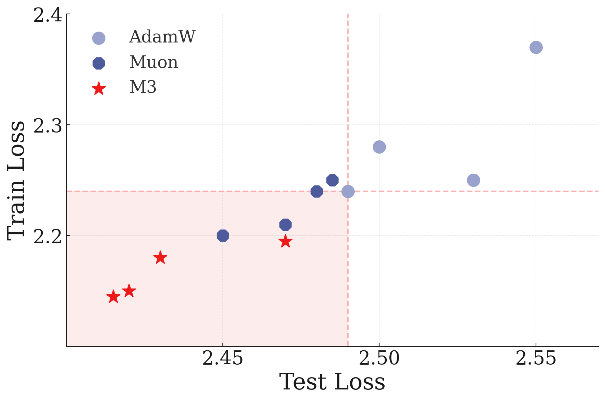
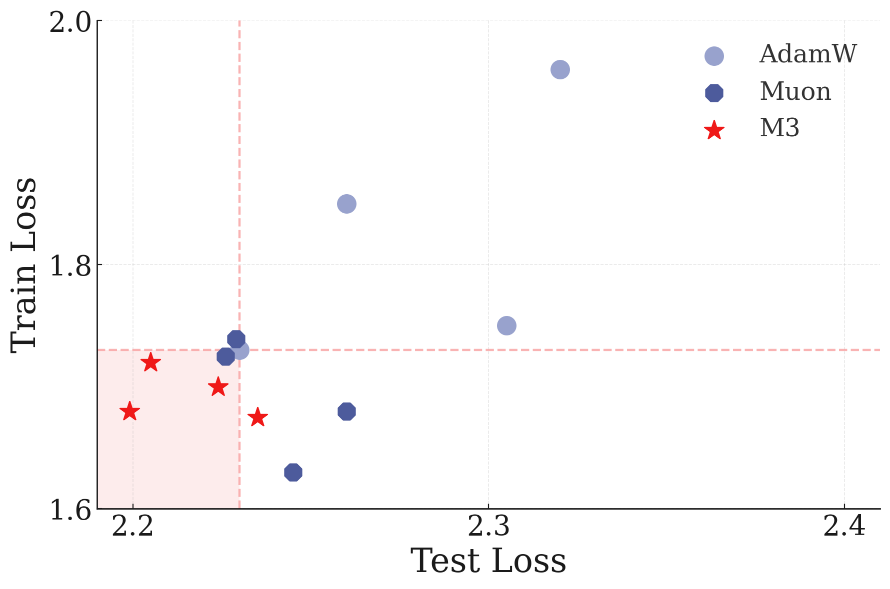

如果我說 Adam 優化器和 Transformer 模型本質上是一樣的，你可能會覺得我瘋了。但請聽我解釋。
在傳統的機器學習觀念中，我們習慣將「模型架構」（Architecture）和「優化器」（Optimizer）分開來看。模型負責學習，優化器負責調整模型。
但在 Nested Learning 的視角下，這兩者之間的界線消失了。
關鍵洞察：
優化器本身就是一個聯想記憶模組，它的任務是學習並壓縮「梯度流」(Gradient Flow)。
✦
Adam：梯度的預測者
讓我們看看最流行的優化器 Adam。它維護了兩個狀態：
- 一階矩（動量 \( m \)）：梯度的平均值。
- 二階矩（\( v \)）：梯度的平方平均值（變異數）。
論文證明，Adam 可以被視為一個最優聯想記憶，它試圖預測梯度的變異數（Variance）。換句話說，Adam 其實是在學習 loss landscape 的幾何形狀！
這意味著，當我們在訓練一個 Transformer 時，其實有兩個學習過程在同時進行：
- 模型層級：Transformer 正在學習預測下一個 Token。
- 優化器層級：Adam 正在學習預測下一個 Gradient。
這就是為什麼優化器的選擇如此重要——它不僅僅是調整步長，它是在對「學習過程本身」進行建模。
"We show that known gradient-based optimizers, such as Adam, SGD with Momentum, etc., are in fact associative memory modules that aim to compress the gradients' information (by gradient descent)."
📄 論文原文翻譯： 我們證明了已知的梯度優化器，如 Adam、帶動量的 SGD 等，實際上是聯想記憶模組，其目的是（通過梯度下降）壓縮梯度的資訊。
Muon 與正交化：學習正確的坐標系
除了 Adam，論文還深入探討了最近非常熱門的 Muon 優化器。
Muon 引入了 Newton-Schulz 迭代 來對梯度進行正交化。在 NL 的視角下，這是一個更高層級的優化：
Preconditioner (預處理器) 是一個聯想記憶，它學習將梯度映射到一個更好的坐標系（正交空間）。
\[ W_{t+1} = W_t - \eta P^{-1}(g_t) \]
這裡的 \( P \) 就在學習這種映射。Muon 試圖讓梯度彼此正交，這樣每次更新就不會干擾之前的學習成果，從而提高學習效率。
✦
M3：多尺度動量 Muon (Multi-scale Momentum Muon)
基於這些洞察，論文提出了一個新的優化器：M3。
🚨 動量的記憶問題： 論文指出，以常見的 \(\beta = 0.9\) 計算，最近的 6 個梯度就佔據了動量累積貢獻的 50%，而 43 個梯度就佔據了 99%。這意味著超過 43 步之前的梯度資訊，對當前動量的貢獻不到 1%！這嚴重限制了優化器對全局 Loss Landscape 的理解。
M3 (Multi-scale Momentum Muon) 引入了類似 CMS（連續體記憶系統）的概念到優化器中，使用了多個不同時間尺度的動量項：
- 短期動量：快速適應當前的梯度變化，負責局部調整。
- 長期動量：保持長期的優化方向，避免遺忘過去學過的任務。
實驗結果顯示，M3 在 ImageNet 訓練中表現優異，這證明了將「多層級記憶」概念引入優化器是正確的方向。

24M 參數模型 (ImageNet-21K)

86M 參數模型 (ImageNet-21K)
📊 實驗解讀：
上圖展示了 ViT 在 ImageNet-21K 上的訓練曲線。可以看到 M3 優化器（綠線）在訓練和測試損失上都達到了最低點，證明了多尺度動量設計的有效性。
「優化器就是模型的潛意識，它默默記住了所有失敗與成功的路徑。」